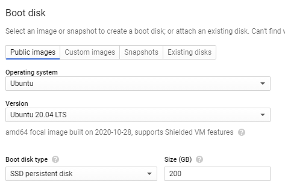
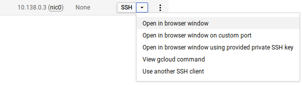
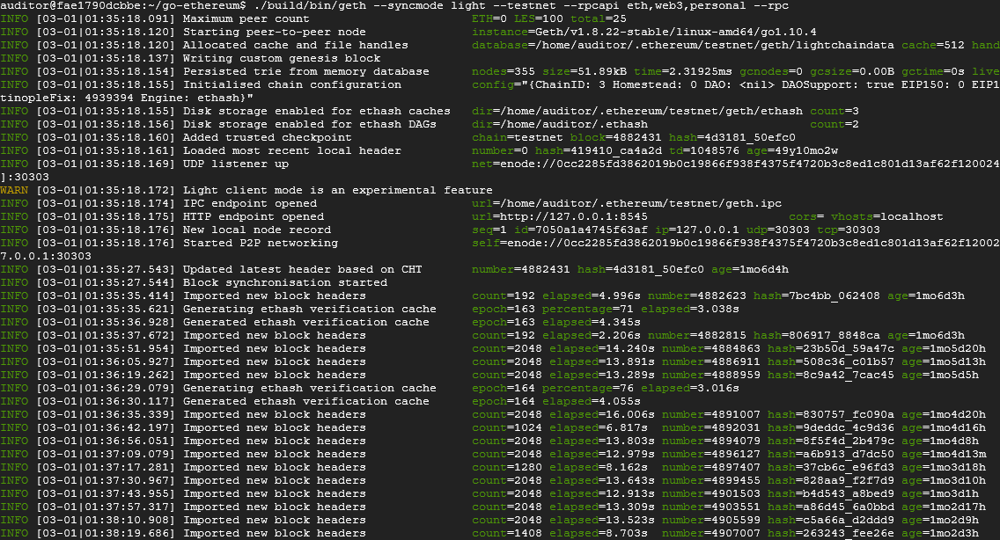
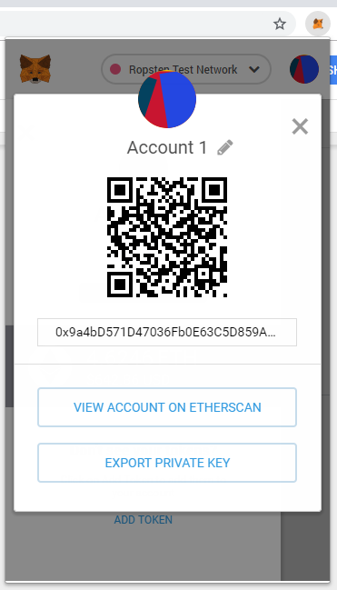
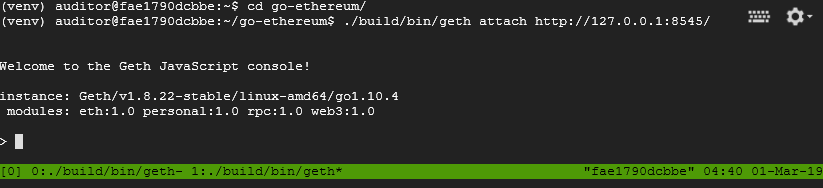
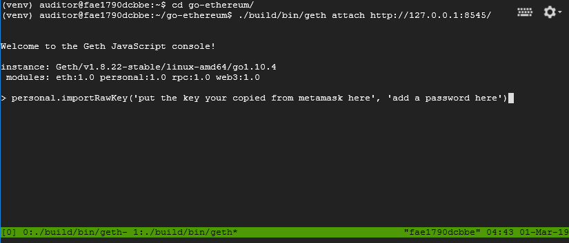
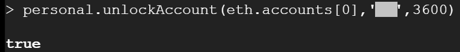

Symbolic execution is an essential tool in modern program analysis and vulnerability discovery. Symbolic execution of smart contracts is a developing field, but will most likely be a useful tool for smart contract auditing and vulnerability testing. In this codelab, you will start by setting up geth, an implementation of an ethereum node as well as Manticore, a Python package supporting the symbolic execution of smart contracts.
You will deploy a Compute Engine instance, install an Ethereum full node (geth), the manticore framework, and files for enabling the symbolic execution of smart contracts from the SI CTF.
tmux to keep sessions persistent in the VM instancegeth full nodeus-west1-be2-standard-4 200 GB of SSD disk space.IMPORTANT: A Ropsten node requires significant disk space that can also handle a lot of I/O. Ensure these settings are made to avoid having to redo the node later.

ssh into instance
sudo add-apt-repository -y ppa:ethereum/ethereum sudo apt update -y sudo apt install -y ethereum z3 python3-setuptools python3-dev cython3 build-essential git clone https://github.com/wu4f/cs410b-src
PATHmkdir -p ~/solidity_versions/0.4.24/ curl -L https://github.com/ethereum/solidity/releases/download/v0.4.24/solc-static-linux > ~/solidity_versions/0.4.24/solc chmod a+x ~/solidity_versions/0.4.24/solc echo 'export PATH=$PATH:~/solidity_versions/0.4.24/' >> ~/.bashrc source ~/.bashrc
git clone -b 0.2.4 https://github.com/trailofbits/manticore.git cd manticore python3 setup.py build sudo python3 setup.py install
tmuxWithin the VM, it may be handy to have multiple sessions. This can be done via tmux. Click here for a tutorial. You will want to create a tmux session with several terminals. One can be used to run the full node via geth. One can be used to run an interactive geth session that allows you to interact with contracts via Javascript. One can be used to navigate the file system. All sessions can be maintained by simply detaching from the tmux session when you are done and reattaching to the tmux session via "tmux attach". Here's some quick tips to use tmux easily.
tmux from the bash shell tmux via Ctrl+b, cCtrl+b, n and Ctrl+b, pCtrl+b, dtmux attachTo interact with the blockchain, we will instantiate and sync a geth light node with the Ropsten test network. The first time this happens, it takes time to catch up. Once caught up, however, it will be much faster on subsequent syncs (assuming you do not delete the node's data contained in ~/.ethereum). We'd also like to enable the ability to interact with our node via an HTTP JSON RPC service on port 8545. To do all of this, within a tmux session, perform the following.
geth \ --allow-insecure-unlock \ --ropsten \ --http --http.addr 127.0.0.1 \ --http.port 8545 --http.api admin,eth,net,web3,personal \ --nousb

This takes a significant amount of time to complete. Two things must happen:
It is only after both of these conditions have been met before you're able to deploy your exploits. Detach from the tmux session (Ctrl+b then d) and come back after several days and reattach to the session to see its progress (tmux attach).
If the command hangs or you receive an error such as:
Synchronisation failed, retrying err="peer is unknown or unhealthy"
Terminate the command (Ctrl+c). Delete the ~/.ethereum folder and try again
We can then interact with the blockchain through it using our wallet. To do so, we first have to import our private key from Metamask into the geth node we've just set up. Navigate through Metamask to find your private key. Don't share this with anyone as they will have full control of your CTF account and potentially solve all your levels for you.

Now, use Ctrl-b+c in tmux to get a new bash window (need to keep the geth node running while we connect to it.) All of your windows will show up as a list in the bottom left, with an asterisk next to the one you're currently viewing. You can navigate through your tmux windows with: Ctrl-b+n and Ctrl-b+p
Connect to your running geth node with:
geth attach http://127.0.0.1:8545/

Now you're ready to import your private key with:
personal.importRawKey('put the key you copied from metamask here', 'add a password here')
You can unlock the account using the password you just set for a particular duration (e.g. 1 hour) as shown below:.
personal.unlockAccount(eth.accounts[0], '<password>', 3600)
We must wait until we are caught up before sending a transaction.
It is important that you keep the tmux sessions you've just set up running throughout the rest of the quarter in order to keep syncing the blockchain state and to save yourself time when performing the labs.
To do so, disconnect from the tmux session by performing
Ctrl-b+dThis will put you into the original shell on the VM.. We can then safely exit the VM shell and the tmux session will remain running. You can then exit from the Ubuntu 20.04 VM.
To reconnect to your session, ssh back into your VM instance on Compute Engine, then perform a "tmux attach" to re-establish your sessions. In order to ensure that geth is done syncing, in the console, issue the following to get the latest block number:
eth.blockNumberThen, visit https://ropsten.etherscan.io to see that it matches the latest block.
You have now set up an Ethereum node using geth that you can now use to interact with the blockchain directly (rather than going to nodes hosted by companies such as Infura). We will need access to this node for running our symbolic execution exercises with Manticore.